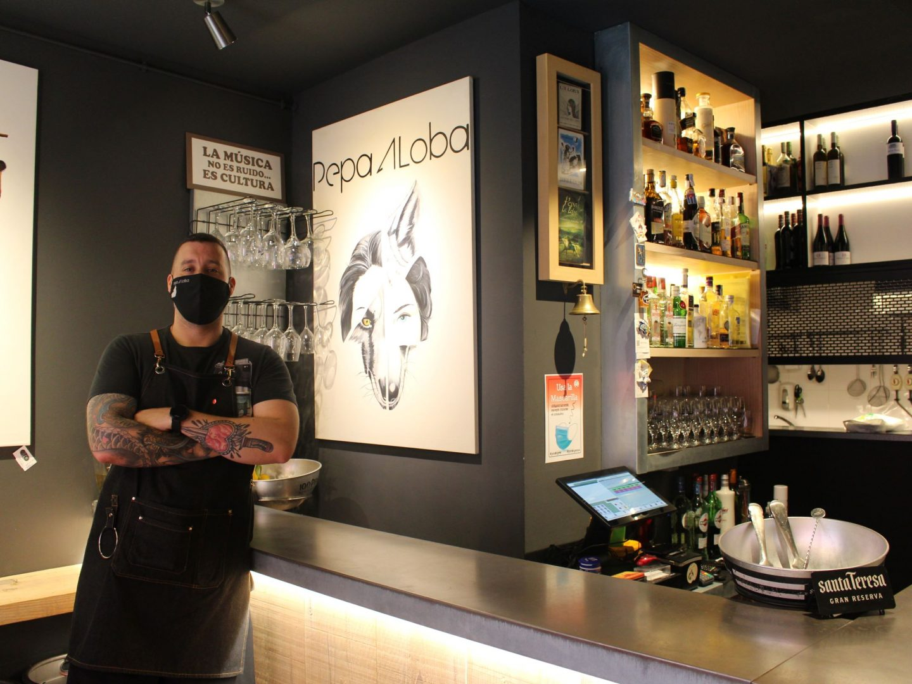
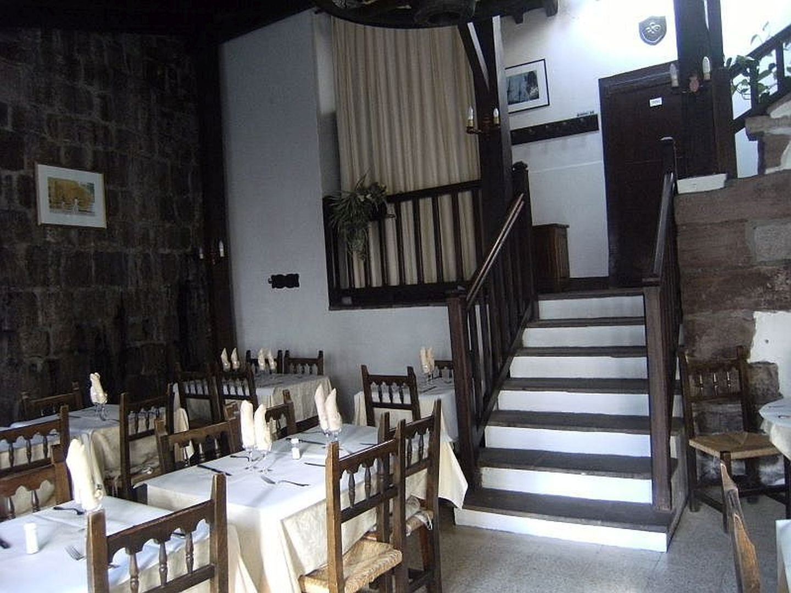

Descubre el camino francés
Los mejores lugares para visitar, comer y disfrutar de la ruta, en un mismo sitio
Parada destacada: Burgos

Top Restaurantes
Pepa a Loba
Santiago
Este céntrico restaurante en la zona vieja de Santiago te embaucará con sus sabores
La Comtienda
Burgos

Restaurante que aúna lo tradicional con una decoración moderna.
Oillarburu
Saint-Jean-Pied-de-Port
Las mejores delicias de la cocina vasca en la primera parada del camino frances

Lee las opiniones de otros peregrinos
Opinión de Juan
El camino francés es una experiencia inolvidable. La gente es muy amable y la comida es deliciosa. Recomiendo encarecidamente este camino.

Opinión de María
El camino francés es una experiencia inolvidable. La gente es muy amable y la comida es deliciosa. Recomiendo encarecidamente este camino.